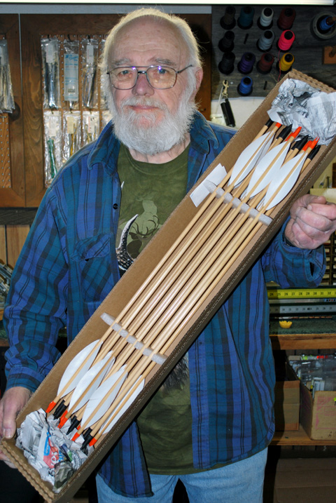

Welcome to
Tollgate Archery/West

We have moved to the West Coast! We will be making changes to the Web Site but the http: will stay the same so keep us in your favorites and keep checking George's Diary.
Margaret and I have been very fortunate to have a shared interest in the sport of archery. Shooting the bow and arrow has been a way of life for us for many years and we have always enjoyed sharing our love for the sport with others. Our greatest satisfaction comes from the look on a beginner's face when they experience a good shot.
Seeing the re-growth of traditional archery over the past decade has been a happy period for us as that is where we started over 50 years ago. We know that shooting in its' simplest form provides an individual shooter with the purist sense of identity with the arrow and with the act of shooting it.
The general availability of compound bows in the early seventies made it possible for anyone to learn to shoot accurately almost immediately. Because of this, we have seen a tremendous growth in the sport over the past thirty years. Due to advances in technology, equipment has become increasingly more sophisticated... so much so, that maintenance has become a job for skilled technicians with a thorough knowledge of the products being used.
At Tollgate Bowhunting, we pride ourselves on the fact that our knowledge and expertise allows us to provide our customers with the finest service available anywhere. Whether your interest is traditional archery, shooting cedar arrows from a longbow or "high-tech" archery shooting carbon arrows from a one-cam speed bow, we have the experience to solve your problems.